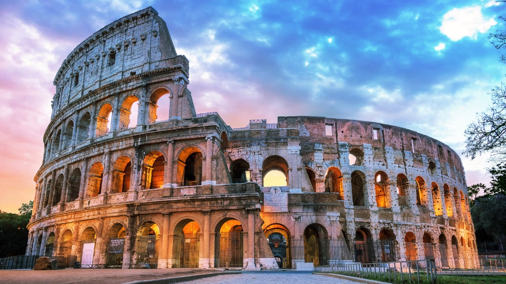

Freya | 3min read | 11-08-2023

The Colosseum, an ancient Roman amphitheater, is an iconic symbol of Rome and a remarkable architectural wonder. Built in the 1st century AD, it once hosted grand spectacles, including gladiatorial contests and theatrical performances, captivating audiences with its grandeur and historical significance, making it a UNESCO World Heritage Site and a testament to the ingenuity of Roman engineering
Construction and Design:
Built during the 1st century AD under the emperors Vespasian and Titus, the Colosseum is a magnificent feat of Roman engineering. It could accommodate up to 80,000 spectators, making it the largest amphitheater of its time. Its distinctive elliptical shape, with a perimeter of 545 meters, provided excellent visibility from every seat.
Gladiatorial Combat
The Colosseum was primarily used for hosting gladiatorial combat, a brutal form of entertainment. Men, often slaves or prisoners, fought to the death, while wild animals were pitted against each other or condemned criminals. These gruesome spectacles were designed to entertain and appease the Roman populace.
Architectural Wonders
The Colosseum's awe-inspiring architecture included a complex system of underground tunnels, cages, and trapdoors used for elevating gladiators and animals into the arena. The Colosseum was also equipped with a retractable awning known as the "velarium," which protected spectators from the sun and rain. With the decline of the Roman Empire, the Colosseum fell into disrepair, and much of its stone was looted for other construction projects. However, efforts to preserve this remarkable structure began in the Middle Ages, and the Colosseum has been partially restored.
Modern Significance:
Today, the Colosseum is one of the most visited tourist attractions in the world. It stands as a symbol of Rome's enduring legacy, a reminder of its architectural brilliance, and the ancient society that used it for both brutal entertainment and political propaganda. In conclusion, the Colosseum is a captivating testament to the grandeur and complexity of ancient Rome. Its history, design, and cultural significance make it an enduring icon, representing the extraordinary achievements of one of the world's most influential civilizations.